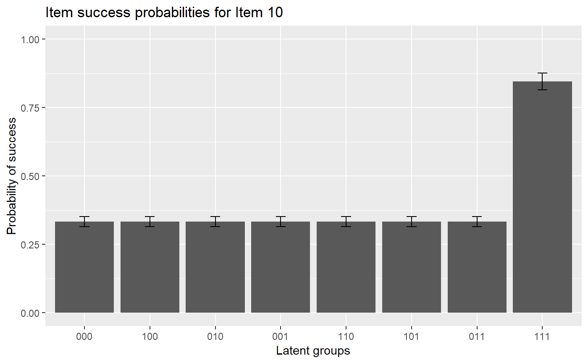
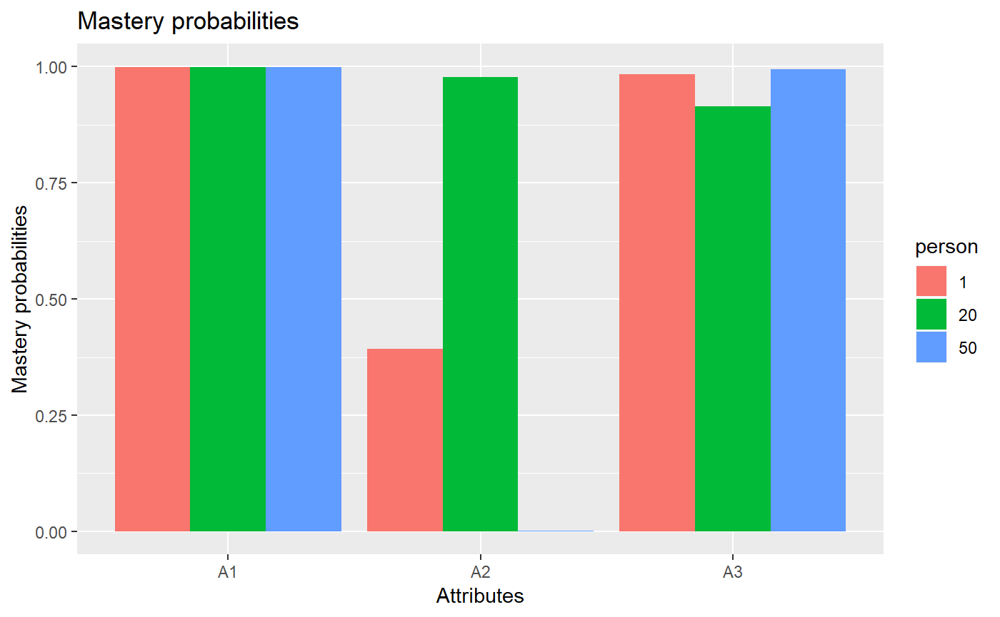

DINA Estimation
Wenchao
2018-08-26
Source:vignettes/OnlineExercises/DINA_example.Rmd
DINA_example.Rmdlibrary(GDINA)## GDINA Package [Version 2.1.20; 2018-8-24]
## For examples and more information,
## see https://wenchao-ma.github.io/GDINA# A simulated data in GDINA package
dat <- sim10GDINA$simdat
Q <- sim10GDINA$simQ
# Fit DINA model
est <- GDINA(dat = dat, Q = Q, model = "DINA")##
Iter = 1 Max. abs. change = 0.52692 Deviance = 12821.161
Iter = 2 Max. abs. change = 0.03777 Deviance = 12309.537
Iter = 3 Max. abs. change = 0.02335 Deviance = 12247.802
Iter = 4 Max. abs. change = 0.01732 Deviance = 12225.591
Iter = 5 Max. abs. change = 0.01474 Deviance = 12212.955
Iter = 6 Max. abs. change = 0.01218 Deviance = 12204.591
Iter = 7 Max. abs. change = 0.00994 Deviance = 12198.687
Iter = 8 Max. abs. change = 0.00810 Deviance = 12194.354
Iter = 9 Max. abs. change = 0.00770 Deviance = 12191.084
Iter = 10 Max. abs. change = 0.00734 Deviance = 12188.565
Iter = 11 Max. abs. change = 0.00688 Deviance = 12186.595
Iter = 12 Max. abs. change = 0.00636 Deviance = 12185.038
Iter = 13 Max. abs. change = 0.00583 Deviance = 12183.796
Iter = 14 Max. abs. change = 0.00532 Deviance = 12182.801
Iter = 15 Max. abs. change = 0.00483 Deviance = 12181.998
Iter = 16 Max. abs. change = 0.00437 Deviance = 12181.348
Iter = 17 Max. abs. change = 0.00395 Deviance = 12180.821
Iter = 18 Max. abs. change = 0.00357 Deviance = 12180.391
Iter = 19 Max. abs. change = 0.00322 Deviance = 12180.039
Iter = 20 Max. abs. change = 0.00291 Deviance = 12179.749
Iter = 21 Max. abs. change = 0.00262 Deviance = 12179.511
Iter = 22 Max. abs. change = 0.00237 Deviance = 12179.313
Iter = 23 Max. abs. change = 0.00214 Deviance = 12179.149
Iter = 24 Max. abs. change = 0.00194 Deviance = 12179.011
Iter = 25 Max. abs. change = 0.00176 Deviance = 12178.895
Iter = 26 Max. abs. change = 0.00161 Deviance = 12178.798
Iter = 27 Max. abs. change = 0.00155 Deviance = 12178.714
Iter = 28 Max. abs. change = 0.00150 Deviance = 12178.643
Iter = 29 Max. abs. change = 0.00144 Deviance = 12178.582
Iter = 30 Max. abs. change = 0.00139 Deviance = 12178.529
Iter = 31 Max. abs. change = 0.00134 Deviance = 12178.483
Iter = 32 Max. abs. change = 0.00129 Deviance = 12178.443
Iter = 33 Max. abs. change = 0.00124 Deviance = 12178.407
Iter = 34 Max. abs. change = 0.00119 Deviance = 12178.376
Iter = 35 Max. abs. change = 0.00115 Deviance = 12178.348
Iter = 36 Max. abs. change = 0.00110 Deviance = 12178.323
Iter = 37 Max. abs. change = 0.00106 Deviance = 12178.301
Iter = 38 Max. abs. change = 0.00102 Deviance = 12178.280
Iter = 39 Max. abs. change = 0.00098 Deviance = 12178.262
Iter = 40 Max. abs. change = 0.00095 Deviance = 12178.245
Iter = 41 Max. abs. change = 0.00091 Deviance = 12178.230
Iter = 42 Max. abs. change = 0.00088 Deviance = 12178.216
Iter = 43 Max. abs. change = 0.00085 Deviance = 12178.203
Iter = 44 Max. abs. change = 0.00082 Deviance = 12178.192
Iter = 45 Max. abs. change = 0.00079 Deviance = 12178.181
Iter = 46 Max. abs. change = 0.00076 Deviance = 12178.171
Iter = 47 Max. abs. change = 0.00074 Deviance = 12178.161
Iter = 48 Max. abs. change = 0.00071 Deviance = 12178.153
Iter = 49 Max. abs. change = 0.00069 Deviance = 12178.144
Iter = 50 Max. abs. change = 0.00066 Deviance = 12178.137
Iter = 51 Max. abs. change = 0.00064 Deviance = 12178.130
Iter = 52 Max. abs. change = 0.00062 Deviance = 12178.123
Iter = 53 Max. abs. change = 0.00060 Deviance = 12178.117
Iter = 54 Max. abs. change = 0.00058 Deviance = 12178.111
Iter = 55 Max. abs. change = 0.00056 Deviance = 12178.106
Iter = 56 Max. abs. change = 0.00054 Deviance = 12178.101
Iter = 57 Max. abs. change = 0.00052 Deviance = 12178.096
Iter = 58 Max. abs. change = 0.00051 Deviance = 12178.092
Iter = 59 Max. abs. change = 0.00049 Deviance = 12178.087
Iter = 60 Max. abs. change = 0.00048 Deviance = 12178.083
Iter = 61 Max. abs. change = 0.00046 Deviance = 12178.080
Iter = 62 Max. abs. change = 0.00045 Deviance = 12178.076
Iter = 63 Max. abs. change = 0.00043 Deviance = 12178.073
Iter = 64 Max. abs. change = 0.00042 Deviance = 12178.070
Iter = 65 Max. abs. change = 0.00041 Deviance = 12178.067
Iter = 66 Max. abs. change = 0.00040 Deviance = 12178.064
Iter = 67 Max. abs. change = 0.00039 Deviance = 12178.061
Iter = 68 Max. abs. change = 0.00037 Deviance = 12178.059
Iter = 69 Max. abs. change = 0.00036 Deviance = 12178.056
Iter = 70 Max. abs. change = 0.00035 Deviance = 12178.054
Iter = 71 Max. abs. change = 0.00034 Deviance = 12178.052
Iter = 72 Max. abs. change = 0.00033 Deviance = 12178.050
Iter = 73 Max. abs. change = 0.00032 Deviance = 12178.048
Iter = 74 Max. abs. change = 0.00032 Deviance = 12178.046
Iter = 75 Max. abs. change = 0.00031 Deviance = 12178.044
Iter = 76 Max. abs. change = 0.00030 Deviance = 12178.042
Iter = 77 Max. abs. change = 0.00029 Deviance = 12178.041
Iter = 78 Max. abs. change = 0.00028 Deviance = 12178.039
Iter = 79 Max. abs. change = 0.00028 Deviance = 12178.038
Iter = 80 Max. abs. change = 0.00027 Deviance = 12178.037
Iter = 81 Max. abs. change = 0.00026 Deviance = 12178.035
Iter = 82 Max. abs. change = 0.00025 Deviance = 12178.034
Iter = 83 Max. abs. change = 0.00025 Deviance = 12178.033
Iter = 84 Max. abs. change = 0.00024 Deviance = 12178.032
Iter = 85 Max. abs. change = 0.00024 Deviance = 12178.031
Iter = 86 Max. abs. change = 0.00023 Deviance = 12178.030
Iter = 87 Max. abs. change = 0.00022 Deviance = 12178.029
Iter = 88 Max. abs. change = 0.00022 Deviance = 12178.028
Iter = 89 Max. abs. change = 0.00021 Deviance = 12178.027
Iter = 90 Max. abs. change = 0.00021 Deviance = 12178.026
Iter = 91 Max. abs. change = 0.00020 Deviance = 12178.025
Iter = 92 Max. abs. change = 0.00020 Deviance = 12178.024
Iter = 93 Max. abs. change = 0.00019 Deviance = 12178.024
Iter = 94 Max. abs. change = 0.00019 Deviance = 12178.023
Iter = 95 Max. abs. change = 0.00018 Deviance = 12178.022
Iter = 96 Max. abs. change = 0.00018 Deviance = 12178.022
Iter = 97 Max. abs. change = 0.00018 Deviance = 12178.021
Iter = 98 Max. abs. change = 0.00017 Deviance = 12178.020
Iter = 99 Max. abs. change = 0.00017 Deviance = 12178.020
Iter = 100 Max. abs. change = 0.00016 Deviance = 12178.019
Iter = 101 Max. abs. change = 0.00016 Deviance = 12178.019
Iter = 102 Max. abs. change = 0.00016 Deviance = 12178.018
Iter = 103 Max. abs. change = 0.00015 Deviance = 12178.018
Iter = 104 Max. abs. change = 0.00015 Deviance = 12178.017
Iter = 105 Max. abs. change = 0.00015 Deviance = 12178.017
Iter = 106 Max. abs. change = 0.00014 Deviance = 12178.016
Iter = 107 Max. abs. change = 0.00014 Deviance = 12178.016
Iter = 108 Max. abs. change = 0.00014 Deviance = 12178.016
Iter = 109 Max. abs. change = 0.00013 Deviance = 12178.015
Iter = 110 Max. abs. change = 0.00013 Deviance = 12178.015
Iter = 111 Max. abs. change = 0.00013 Deviance = 12178.015
Iter = 112 Max. abs. change = 0.00013 Deviance = 12178.014
Iter = 113 Max. abs. change = 0.00012 Deviance = 12178.014
Iter = 114 Max. abs. change = 0.00012 Deviance = 12178.014
Iter = 115 Max. abs. change = 0.00012 Deviance = 12178.013
Iter = 116 Max. abs. change = 0.00011 Deviance = 12178.013
Iter = 117 Max. abs. change = 0.00011 Deviance = 12178.013
Iter = 118 Max. abs. change = 0.00011 Deviance = 12178.012
Iter = 119 Max. abs. change = 0.00011 Deviance = 12178.012
Iter = 120 Max. abs. change = 0.00011 Deviance = 12178.012
Iter = 121 Max. abs. change = 0.00010 Deviance = 12178.012
Iter = 122 Max. abs. change = 0.00010 Deviance = 12178.012
Iter = 123 Max. abs. change = 0.00010 Deviance = 12178.011#####################################
#
# Summary Information
#
#####################################
# print estimation information
est## Call:
## GDINA(dat = dat, Q = Q, model = "DINA")
##
## GDINA version 2.1.20 (2018-8-24)
## ===============================================
## Data
## -----------------------------------------------
## # of individuals groups items
## 1000 1 10
## ===============================================
## Model
## -----------------------------------------------
## Fitted model(s) = DINA
## Attribute structure = saturated
## Attribute level = Dichotomous
## ===============================================
## Estimation
## -----------------------------------------------
## Number of iterations = 123
## For the final iteration:
## Max abs change in item success prob. = 0.0001
## Max abs change in mixing proportions = 0.0000
## Change in -2 log-likelihood = 0.0002
## Time used = 0.2081 secs# summary information
summary(est)##
## Test Fit Statistics
##
## Loglik = -6089.01
## AIC = 12232.01 | penalty = 54
## BIC = 12364.52 | penalty = 186.51
##
## No. of parameters = 27
## No. of estimated item parameters = 20
## No. of fixed item parameters = 0
## No. of distribution parameters = 7
##
## Attribute Prevalence
##
## Level0 Level1
## A1 0.2741 0.7259
## A2 0.4193 0.5807
## A3 0.4576 0.5424AIC(est) #AIC## [1] 12232.01BIC(est) #BIC## [1] 12364.52logLik(est) #log-likelihood value## 'log Lik.' -6089.006 (df=27)deviance(est) # deviance: -2 log-likelihood## [1] 12178.01npar(est) # number of parameters## No. of total parameters = 27
## No. of population parameters = 7
## No. of free item parameters = 20
## No. of fixed item parameters = 0nobs(est) # number of observations## [1] 1000# discrimination indices
extract(est, "discrim")## P(1)-P(0) GDI
## Item 1 0.7130291 0.10116011
## Item 2 0.6354926 0.09832940
## Item 3 0.8210838 0.16733078
## Item 4 0.5772879 0.08046730
## Item 5 0.6335452 0.08599592
## Item 6 0.3424411 0.02881569
## Item 7 0.4222018 0.04304024
## Item 8 0.5448613 0.07295067
## Item 9 0.5303269 0.06025734
## Item 10 0.5122576 0.04649009#####################################
#
# structural parameters
#
#####################################
coef(est) # item probabilities of success for each reduced latent class## $`Item 1`
## P(0) P(1)
## 0.0325 0.7455
##
## $`Item 2`
## P(0) P(1)
## 0.0919 0.7274
##
## $`Item 3`
## P(0) P(1)
## 0.0716 0.8927
##
## $`Item 4`
## P(00) P(10) P(01) P(11)
## 0.2197 0.2197 0.2197 0.7970
##
## $`Item 5`
## P(00) P(10) P(01) P(11)
## 0.0820 0.0820 0.0820 0.7156
##
## $`Item 6`
## P(00) P(10) P(01) P(11)
## 0.5852 0.5852 0.5852 0.9276
##
## $`Item 7`
## P(00) P(10) P(01) P(11)
## 0.2559 0.2559 0.2559 0.6781
##
## $`Item 8`
## P(00) P(10) P(01) P(11)
## 0.1472 0.1472 0.1472 0.6920
##
## $`Item 9`
## P(00) P(10) P(01) P(11)
## 0.2681 0.2681 0.2681 0.7984
##
## $`Item 10`
## P(000) P(100) P(010) P(001) P(110) P(101) P(011) P(111)
## 0.3331 0.3331 0.3331 0.3331 0.3331 0.3331 0.3331 0.8454coef(est, withSE = TRUE) # item probabilities of success & standard errors## $`Item 1`
## P(0) P(1)
## Est. 0.0325 0.7455
## S.E. 0.0457 0.0228
##
## $`Item 2`
## P(0) P(1)
## Est. 0.0919 0.7274
## S.E. 0.0261 0.0244
##
## $`Item 3`
## P(0) P(1)
## Est. 0.0716 0.8927
## S.E. 0.0227 0.0202
##
## $`Item 4`
## P(00) P(10) P(01) P(11)
## Est. 0.2197 0.2197 0.2197 0.7970
## S.E. 0.0205 0.0205 0.0205 0.0269
##
## $`Item 5`
## P(00) P(10) P(01) P(11)
## Est. 0.0820 0.0820 0.0820 0.7156
## S.E. 0.0125 0.0125 0.0125 0.0325
##
## $`Item 6`
## P(00) P(10) P(01) P(11)
## Est. 0.5852 0.5852 0.5852 0.9276
## S.E. 0.0234 0.0234 0.0234 0.0175
##
## $`Item 7`
## P(00) P(10) P(01) P(11)
## Est. 0.2559 0.2559 0.2559 0.6781
## S.E. 0.0206 0.0206 0.0206 0.0279
##
## $`Item 8`
## P(00) P(10) P(01) P(11)
## Est. 0.1472 0.1472 0.1472 0.6920
## S.E. 0.0197 0.0197 0.0197 0.0299
##
## $`Item 9`
## P(00) P(10) P(01) P(11)
## Est. 0.2681 0.2681 0.2681 0.7984
## S.E. 0.0187 0.0187 0.0187 0.0272
##
## $`Item 10`
## P(000) P(100) P(010) P(001) P(110) P(101) P(011) P(111)
## Est. 0.3331 0.3331 0.3331 0.3331 0.3331 0.3331 0.3331 0.8454
## S.E. 0.0182 0.0182 0.0182 0.0182 0.0182 0.0182 0.0182 0.0307coef(est, what = "delta") # delta parameters## $`Item 1`
## d0 d1
## 0.0324 0.7130
##
## $`Item 2`
## d0 d1
## 0.0919 0.6355
##
## $`Item 3`
## d0 d1
## 0.0716 0.8211
##
## $`Item 4`
## d0 d1
## 0.2197 0.5773
##
## $`Item 5`
## d0 d1
## 0.0820 0.6335
##
## $`Item 6`
## d0 d1
## 0.5852 0.3424
##
## $`Item 7`
## d0 d1
## 0.2559 0.4222
##
## $`Item 8`
## d0 d1
## 0.1472 0.5449
##
## $`Item 9`
## d0 d1
## 0.2681 0.5303
##
## $`Item 10`
## d0 d1
## 0.3331 0.5123coef(est, what = "delta", withSE = TRUE) # delta parameters## $`Item 1`
## d0 d1
## Est. 0.0324 0.7130
## S.E. 0.0457 0.0601
##
## $`Item 2`
## d0 d1
## Est. 0.0919 0.6355
## S.E. 0.0261 0.0413
##
## $`Item 3`
## d0 d1
## Est. 0.0716 0.8211
## S.E. 0.0227 0.0340
##
## $`Item 4`
## d0 d1
## Est. 0.2197 0.5773
## S.E. 0.0205 0.0371
##
## $`Item 5`
## d0 d1
## Est. 0.0820 0.6335
## S.E. 0.0125 0.0362
##
## $`Item 6`
## d0 d1
## Est. 0.5852 0.3424
## S.E. 0.0234 0.0322
##
## $`Item 7`
## d0 d1
## Est. 0.2559 0.4222
## S.E. 0.0206 0.0375
##
## $`Item 8`
## d0 d1
## Est. 0.1472 0.5449
## S.E. 0.0197 0.0401
##
## $`Item 9`
## d0 d1
## Est. 0.2681 0.5303
## S.E. 0.0187 0.0348
##
## $`Item 10`
## d0 d1
## Est. 0.3331 0.5123
## S.E. 0.0182 0.0377coef(est, what = "gs") # guessing and slip parameters## guessing slip
## Item 1 0.0325 0.2545
## Item 2 0.0919 0.2726
## Item 3 0.0716 0.1073
## Item 4 0.2197 0.2030
## Item 5 0.0820 0.2844
## Item 6 0.5852 0.0724
## Item 7 0.2559 0.3219
## Item 8 0.1472 0.3080
## Item 9 0.2681 0.2016
## Item 10 0.3331 0.1546coef(est, what = "gs", withSE = TRUE) # guessing and slip parameters & standard errors## guessing slip SE[guessing] SE[slip]
## Item 1 0.0325 0.2545 0.0457 0.0228
## Item 2 0.0919 0.2726 0.0261 0.0244
## Item 3 0.0716 0.1073 0.0227 0.0202
## Item 4 0.2197 0.2030 0.0205 0.0269
## Item 5 0.0820 0.2844 0.0125 0.0325
## Item 6 0.5852 0.0724 0.0234 0.0175
## Item 7 0.2559 0.3219 0.0206 0.0279
## Item 8 0.1472 0.3080 0.0197 0.0299
## Item 9 0.2681 0.2016 0.0187 0.0272
## Item 10 0.3331 0.1546 0.0182 0.0307# Estimated proportions of latent classes
coef(est,"lambda")## p(000) p(100) p(010) p(001) p(110) p(101) p(011) p(111)
## 0.0739 0.1138 0.0653 0.0541 0.2045 0.1774 0.0808 0.2301# success probabilities for each latent class
coef(est,"LCprob")## 000 100 010 001 110 101 011 111
## Item 1 0.0325 0.7455 0.0325 0.0325 0.7455 0.7455 0.0325 0.7455
## Item 2 0.0919 0.0919 0.7274 0.0919 0.7274 0.0919 0.7274 0.7274
## Item 3 0.0716 0.0716 0.0716 0.8927 0.0716 0.8927 0.8927 0.8927
## Item 4 0.2197 0.2197 0.2197 0.2197 0.2197 0.7970 0.2197 0.7970
## Item 5 0.0820 0.0820 0.0820 0.0820 0.0820 0.0820 0.7156 0.7156
## Item 6 0.5852 0.5852 0.5852 0.5852 0.9276 0.5852 0.5852 0.9276
## Item 7 0.2559 0.2559 0.2559 0.2559 0.2559 0.6781 0.2559 0.6781
## Item 8 0.1472 0.1472 0.1472 0.1472 0.6920 0.1472 0.1472 0.6920
## Item 9 0.2681 0.2681 0.2681 0.2681 0.2681 0.2681 0.7984 0.7984
## Item 10 0.3331 0.3331 0.3331 0.3331 0.3331 0.3331 0.3331 0.8454#####################################
#
# person parameters
#
#####################################
head(personparm(est)) # EAP estimates of attribute profiles## A1 A2 A3
## [1,] 1 0 1
## [2,] 1 1 1
## [3,] 1 1 1
## [4,] 1 1 1
## [5,] 1 0 1
## [6,] 1 0 0head(personparm(est, what = "MAP")) # MAP estimates of attribute profiles## A1 A2 A3 multimodes
## 1 1 0 1 FALSE
## 2 1 1 1 FALSE
## 3 1 1 1 FALSE
## 4 1 1 1 FALSE
## 5 1 0 1 FALSE
## 6 1 0 0 FALSEhead(personparm(est, what = "MLE")) # MLE estimates of attribute profiles## A1 A2 A3 multimodes
## 1 1 0 1 FALSE
## 2 1 1 1 FALSE
## 3 1 1 1 FALSE
## 4 1 1 1 FALSE
## 5 1 0 1 FALSE
## 6 1 0 0 FALSE#####################################
#
# Plots
#
#####################################
#plot item response functions for item 10
plot(est, item = 10)
plot(est, item = 10, withSE = TRUE) # with error bars
#plot mastery probability for individuals 1, 20 and 50
plot(est, what = "mp", person = c(1, 20, 50))
#####################################
#
# Advanced elements
#
#####################################
head(indlogLik(est)) # individual log-likelihood## [,1] [,2] [,3] [,4] [,5] [,6]
## [1,] -12.987936 -9.853642 -14.191346 -10.46499 -9.048389 -5.067801
## [2,] -17.693467 -14.559173 -15.625029 -15.17052 -10.482073 -9.773332
## [3,] -14.979557 -11.845263 -12.911120 -12.45661 -10.334711 -9.694424
## [4,] -15.713375 -12.579081 -16.916786 -13.19043 -11.773829 -7.793241
## [5,] -7.485988 -8.821375 -8.689398 -4.96304 -12.789145 -4.035535
## [6,] -8.435378 -5.301084 -9.638789 -10.59318 -6.702306 -9.643424
## [,7] [,8]
## [1,] -14.129573 -5.792448
## [2,] -12.225426 -3.888301
## [3,] -7.130733 -6.388068
## [4,] -11.136399 -5.192185
## [5,] -8.627625 -11.926114
## [6,] -14.257768 -12.574544head(indlogPost(est)) # individual log-posterior## [,1] [,2] [,3] [,4] [,5] [,6]
## [1,] -9.300311 -5.7349559 -10.627822 -7.090120 -4.343432 -0.5049361
## [2,] -14.943891 -11.3785359 -12.999554 -12.733700 -6.715165 -6.1485161
## [3,] -9.922051 -6.3566954 -7.977714 -7.711859 -4.259872 -3.7616766
## [4,] -11.714497 -8.1491416 -13.042008 -9.504306 -6.757618 -2.9191218
## [5,] -4.463662 -5.3679878 -5.791173 -2.253470 -8.749486 -0.1379680
## [6,] -3.972561 -0.4072056 -5.300072 -6.443122 -1.222156 -4.3053657
## [,7] [,8]
## [1,] -10.353129 -0.969554047
## [2,] -9.387031 -0.003455778
## [3,] -1.984407 -0.195292056
## [4,] -7.048701 -0.058037522
## [5,] -5.516480 -7.768518718
## [6,] -9.706131 -6.976457342extract(est,"designmatrix") #design matrix## [[1]]
## [,1] [,2]
## [1,] 1 0
## [2,] 1 1
##
## [[2]]
## [,1] [,2]
## [1,] 1 0
## [2,] 1 1
##
## [[3]]
## [,1] [,2]
## [1,] 1 0
## [2,] 1 1
##
## [[4]]
## [,1] [,2]
## [1,] 1 0
## [2,] 1 0
## [3,] 1 0
## [4,] 1 1
##
## [[5]]
## [,1] [,2]
## [1,] 1 0
## [2,] 1 0
## [3,] 1 0
## [4,] 1 1
##
## [[6]]
## [,1] [,2]
## [1,] 1 0
## [2,] 1 0
## [3,] 1 0
## [4,] 1 1
##
## [[7]]
## [,1] [,2]
## [1,] 1 0
## [2,] 1 0
## [3,] 1 0
## [4,] 1 1
##
## [[8]]
## [,1] [,2]
## [1,] 1 0
## [2,] 1 0
## [3,] 1 0
## [4,] 1 1
##
## [[9]]
## [,1] [,2]
## [1,] 1 0
## [2,] 1 0
## [3,] 1 0
## [4,] 1 1
##
## [[10]]
## [,1] [,2]
## [1,] 1 0
## [2,] 1 0
## [3,] 1 0
## [4,] 1 0
## [5,] 1 0
## [6,] 1 0
## [7,] 1 0
## [8,] 1 1extract(est,"linkfunc") #link functions## [1] "identity" "identity" "identity" "identity" "identity" "identity"
## [7] "identity" "identity" "identity" "identity"sessionInfo()## R version 3.5.1 (2018-07-02)
## Platform: x86_64-w64-mingw32/x64 (64-bit)
## Running under: Windows 10 x64 (build 17134)
##
## Matrix products: default
##
## locale:
## [1] LC_COLLATE=English_United States.1252
## [2] LC_CTYPE=English_United States.1252
## [3] LC_MONETARY=English_United States.1252
## [4] LC_NUMERIC=C
## [5] LC_TIME=English_United States.1252
##
## attached base packages:
## [1] stats graphics grDevices utils datasets methods base
##
## other attached packages:
## [1] GDINA_2.1.20
##
## loaded via a namespace (and not attached):
## [1] Rcpp_0.12.18 nloptr_1.0.4 pillar_1.3.0
## [4] plyr_1.8.4 compiler_3.5.1 later_0.7.3
## [7] tools_3.5.1 digest_0.6.16 tibble_1.4.2
## [10] evaluate_0.11 memoise_1.1.0 gtable_0.2.0
## [13] rlang_0.2.2 shiny_1.1.0 rstudioapi_0.7
## [16] commonmark_1.5 yaml_2.2.0 parallel_3.5.1
## [19] pkgdown_1.1.0 stringr_1.3.1 roxygen2_6.1.0
## [22] xml2_1.2.0 knitr_1.20 desc_1.2.0
## [25] fs_1.2.6 rprojroot_1.3-2 shinydashboard_0.7.0
## [28] grid_3.5.1 R6_2.2.2 rmarkdown_1.10
## [31] Rsolnp_1.16 alabama_2015.3-1 ggplot2_3.0.0
## [34] magrittr_1.5 backports_1.1.2 scales_1.0.0
## [37] promises_1.0.1 htmltools_0.3.6 MASS_7.3-50
## [40] assertthat_0.2.0 colorspace_1.3-2 mime_0.5
## [43] xtable_1.8-2 httpuv_1.4.5 numDeriv_2016.8-1
## [46] labeling_0.3 stringi_1.2.4 lazyeval_0.2.1
## [49] munsell_0.5.0 truncnorm_1.0-8 crayon_1.3.4